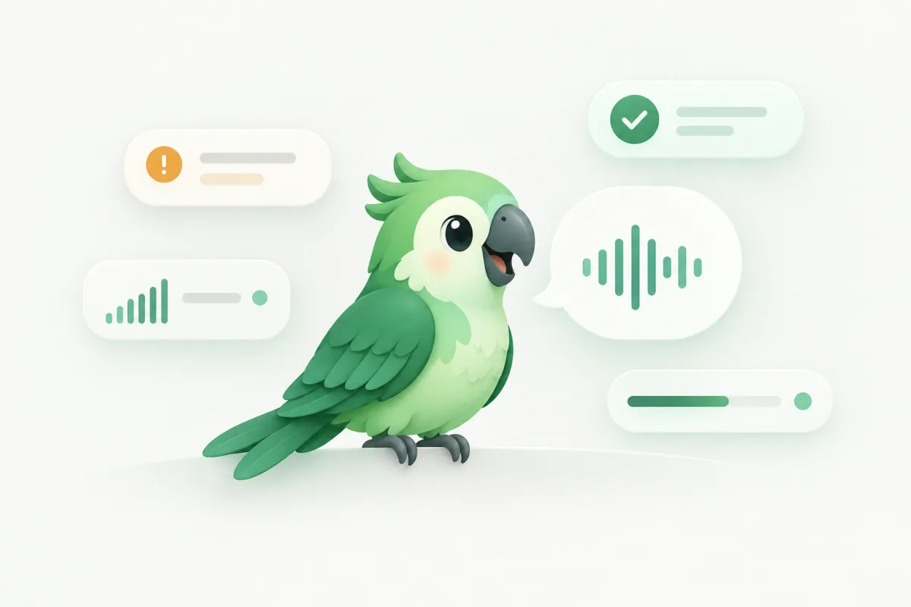

語氣模型 · 在你的 Mac 上執行
語氣提醒，靠兩個小模型。
學舌鳥內建中文 X6At 與英文 EN2 兩個語氣模型。每句話先判斷語言，中英混用也可以。它在你的 Mac 上讀你正要送出的話和當下的情境，判斷要不要提醒你。不需要網路，也不需要 AI key。
中文 X6At：約 11 MB · 英文 EN2：約 15 MB完全在本機執行不需網路與 AI key每次判斷只要幾毫秒

英文語氣模型 · EN2
英文也能在送出前提醒。
EN2 約 15 MB，以 google/electra-small-discriminator 為底模，採 Apache-2.0 授權。在 Mac 本機判斷，不需 API key，文字不會送出。遇到可能傷人、消極攻擊或不合場合的隨便語氣，會先提醒你。英文個人化語氣訓練也能使用。
英文測試集的三種情境中，刺人的訊息分別抓到 8/9、9/9、8/9；平和句子沒有誤報。
它看什麼
你要說的話，
加上當下的情境。
你聽寫或輸入完成時，學舌鳥會讀取目前視窗的情境，連同你要送出的那句話一起交給模型。
- 你在哪個 App、什麼場景，例如回信、聊天、群組、文件
- 對象與主旨，例如收件人、信件主旨
- 前面幾則對話，以及還沒送出的草稿
- 你正要送出的這句話
只在你輸入的那一刻讀取，不在背景監看。讀到的內容只在本機使用，不會上傳。
Mail · 回信 · 陳經理
你說的
“報價單上週就寄過了，你先看清楚。”
場景：回信 對象：客戶 語氣：偏衝這句可能讓對方感到被責備，送出前要不要再看一下？
它判斷什麼
一句話，讀出七件事。
這是學舌鳥在你送出前，對同一句話做的判斷。它再依照你的設定，決定要不要提醒你。
Mail · 回信 · 陳經理
“報價單上週就寄過了，你先看清楚。”
模型讀出
- 場景
- 回信聊天、群組、文件、AI 對話⋯
- 對象
- 客戶主管、同事、朋友、家人⋯
- 目的
- 回覆詢問約時間、催進度、道歉、閒聊⋯
- 場合
- 要正式
- 語氣
- 平和略急偏衝很衝
- 會不會刺傷人
- 可能會
- 太隨便
- 不會
怎麼變成提醒
兩種提醒，輕重不同。
✦ 語氣提醒
這句可能讓對方感到被責備，送出前要不要再看一下？
判斷不對這個 App 不要提醒
好啦明天再弄
這個場合可以正式一點 · ✦ 改寫
不想被提醒的 App 可以自己加進清單；跟 AI 對話時預設不提醒。要不要改、要不要送出，都由你決定。
個人化訓練在訓練什麼
你的回饋，
只訓練你的那一層。
內建的語氣模型是起點。你在提醒卡上按「判斷不對」並確認之後，學舌鳥會在這台 Mac 上，在這個模型之上訓練一層只屬於你的個人調整，讓提醒越來越貼近你的分寸。
累積回饋
在提醒卡上按「判斷不對」，再到確認清單確認。至少累積 20 筆才能開始訓練。
在本機訓練
訓練在這台 Mac 上進行，資料不會上傳。個人調整只作用在語氣與提醒的判斷。
驗收
每 5 筆留 1 筆不拿來訓練，專門檢查新判斷；同時用內建的檢查句確認整體判斷沒有變差。沒通過就不能採用。
採用與還原
採用後會留下版本紀錄，隨時可以還原上一版，或回到原本的模型。
備註：詞典與訓練的差別
詞典：修正聽錯的字，你確認後加入，下次就打對。
個人化訓練：調整語氣提醒的判斷，讓提醒更貼近你。
詞典：修正聽錯的字，你確認後加入，下次就打對。
個人化訓練：調整語氣提醒的判斷，讓提醒更貼近你。